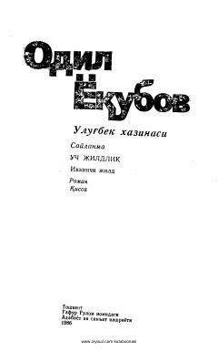

QJInsoniy munosabatlar va axloqiy masalalarga bag'ishlangan ta'sirli qissa.
Ushbu asar taniqli yozuvchi Odil Yoqubov qalamiga mansub bo'lib, unda qahramonlarning hayoti, ma'naviy-axloqiy qarashlari va shaxsiy kechinmalari tasvirlangan. Kitobda davr muammolari va insoniy munosabatlar realistik tarzda ochib berilgan.